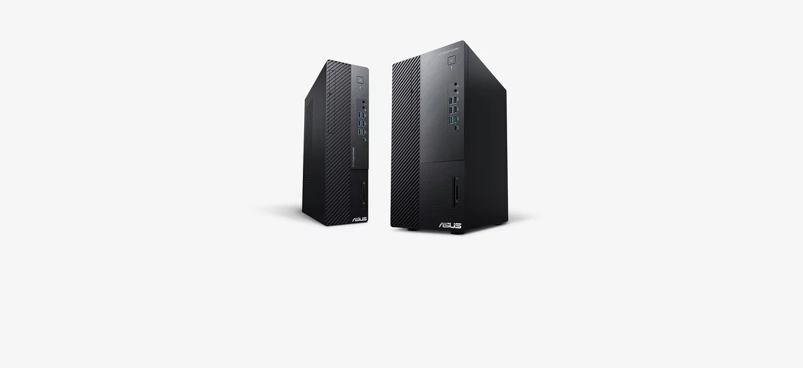
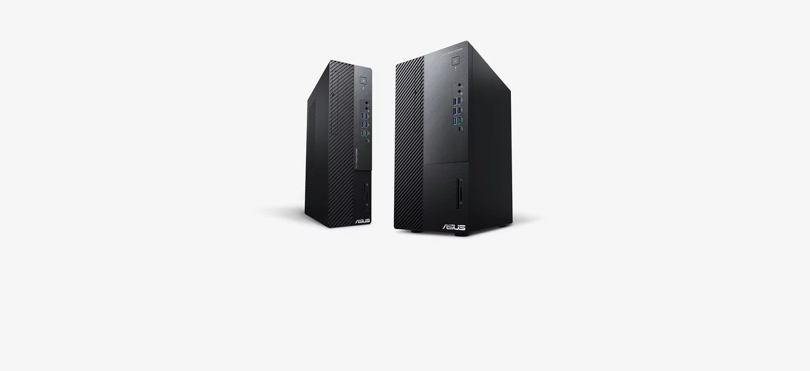
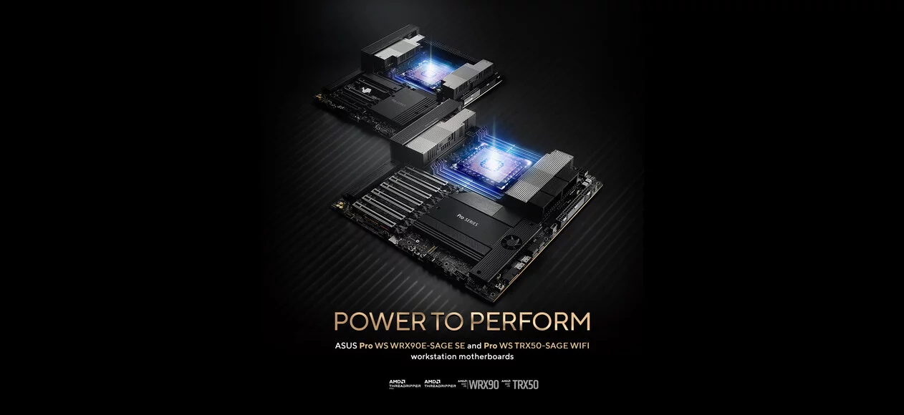
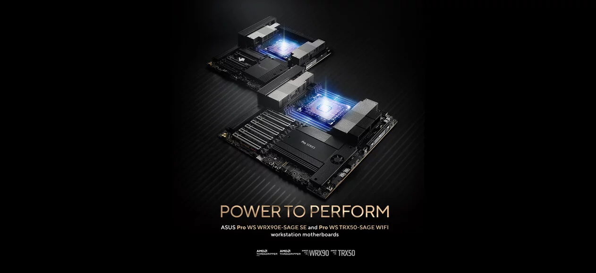
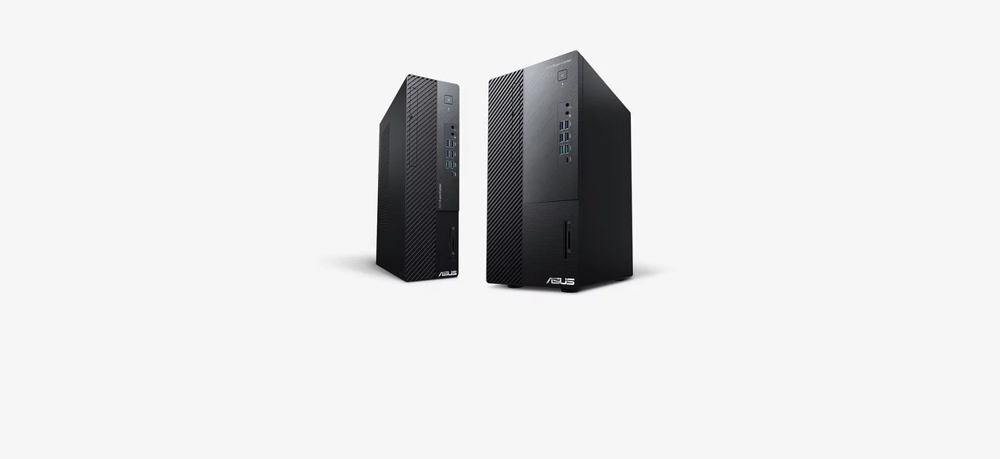
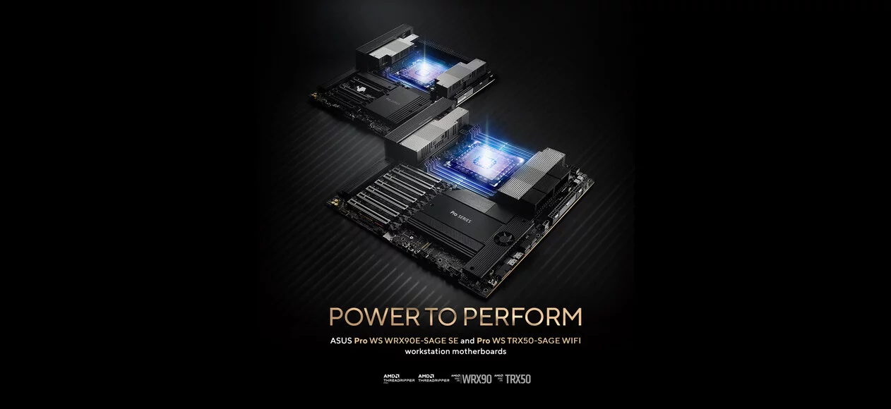

Our Products
 

 

ASUS is a Taiwan-based, multinational computer hardware and consumer electronics company that was established in 1989. Dedicated to creating products for todays and tomorrows smart life, ASUS is the worlds No. 1 motherboard and gaming brand as well as a top-three consumer notebook vendor.
ASUS became widely known in North America when it revolutionized the PC industry in 2007 with its Eee PC™. Today, the company is pioneering new mobile trends with the ASUS ZenFone™ series, and it is rapidly developing virtual and augmented reality products as well as IOT devices and robotics technologies. Most recently, ASUS introduced Zenbo, a smart home robot designed to provide assistance, entertainment, and companionship to families.
In 2015 and 2016, Fortune magazine recognized ASUS as one of the Worlds Most Admired Companies, and for the past four years Interbrand has ranked ASUS Taiwans most valuable international brand. The company has more than 17,000 employees, including a world-class R&D team. Driven by innovation and committed to quality, ASUS won 4,385 awards and earned approximately US$13.3 billion in revenue in 2016.
The end of the 1990s was a time of rapid growth for Asus. The company prioritized talent acquisition and research into new technologies. Because of this, they were able to bring radical new technology to market before their competitors.
Asus began trading as a public company in 1996, with an official listing on the Taiwan Stock Exchange. Thanks to Asus, Taiwan became a hub for technology with a reputation for quality components and new development. The company branched out into the mobile computing market with the release of the Asus P6300 laptop in 1997.
By 2000, the company opened customer service centers in China, the Netherlands, the United States, Australia, and Japan. With such extensive marketing efforts, the company soon became a household name, especially with further advances in the laptop market.
The early 2000s saw Asus release an array of experimental technologies. It started with the launch of the worlds first ever PDA, or personal digital assistant. An early precursor to the modern smartphone, the PDA was designed to take notes, hold dates in a calendar, and offer functions like a calculator and clock. While not a smashing commercial success, the Asus PDA ran on the Intel PXA250 CPU and was officially named the Asus MyPal.

